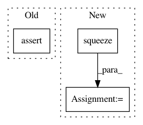

1633f31066b98cb5e8c8c3a13436b6bdf32afea3,encoding/__init__.py,Encoding,forward,#Encoding#Any#,53
Before Change
def forward(self, X):
// input X is a 4D tensor
assert(X.dim()==4, "Encoding Layer requries 4D featuremaps!")
assert(X.size(1)==self.D,"Encoding Layer incompatible input channels!")
B, N, K, D = X.size(0), X.size(2)*X.size(3), self.K, self.D
// reshape input
X = X.view(B,D,-1).transpose(1,2)
After Change
E = aggregate()(A, R)
if unpacked:
E = E.squeeze(0)
return E
def __repr__(self):
return self.__class__.__name__ + "(" \
In pattern: SUPERPATTERN
Frequency: 4
Non-data size: 3
Instances
Project Name: zhanghang1989/PyTorch-Encoding
Commit Name: 1633f31066b98cb5e8c8c3a13436b6bdf32afea3
Time: 2017-05-21
Author: zhang.hang@rutgers.edu
File Name: encoding/__init__.py
Class Name: Encoding
Method Name: forward
Project Name: ilastik/ilastik
Commit Name: 5ec7c3abfb74a4425a201b49bb814f343d246e15
Time: 2014-04-24
Author: webmaster@burgerdev.de
File Name: tests/test_applets/thresholdTwoLevels/testOpGraphcutSegment.py
Class Name: TestOpObjectsSegment
Method Name: testCC
Project Name: scikit-multiflow/scikit-multiflow
Commit Name: c758ff3b1b34c2f041306018f726306f4d7eee32
Time: 2018-10-11
Author: p.gijsbers@tue.nl
File Name: tests/meta/test_adaptive_random_forests.py
Class Name:
Method Name: test_adaptive_random_forests_labels_given
Project Name: freelunchtheorem/Conditional_Density_Estimation
Commit Name: 602dd3d58e038b8d386624a875703181c3db76bd
Time: 2019-01-16
Author: jonas.rothfuss@gmx.de
File Name: cde/density_simulation/LinearGaussian.py
Class Name: LinearGaussian
Method Name: pdf